Dawno temu istniało miejsce zwane Pierwszym Ogrodem, gdzie wszystko było w idealnej równowadze.
Wszystkie stworzenia i ludzie żyli w pełnej jedności – rozumieli się bez słów, a świat wokół nich mienił się kolorami, których dziś nie potrafimy nawet nazwać.

Jednak pewnego dnia, przez pychę i chęć bycia ważniejszymi od innych, ludzie zaczęli budować mury między sobą.
Harmonii nie dało się utrzymać w izolacji – ogród zaczął tracić swoje barwy, aż stał się bezbarwny i podzielony na kawałki.

Dziś odnaleźliśmy mapę, która pokazuje, że Pierwszy Ogród wcale nie zniknął – on jest "uśpiony" pod powierzchnią naszej codzienności.
Każdy podział, każde "ja" zamiast "my", sprawia, że szarość staje się głębsza.

Waszym zadaniem jest odnalezienie utraconych kolorów i przywrócenie Pierwszemu Ogrodowi dawnej świetności.
Aby to zrobić, będziecie musieli działać RAZEM. Tylko prawdziwa jedność i współpraca może przywrócić dawny porządek. Przed wami 5 stacji, na których znajdziecie utracone kolory.

Na szóstej, finałowej stacji czeka na was Pierwszy Ogród - razem z innymi grupami przywrócicie go do życia!
Nie szukamy zwycięzców, szukamy tych, którzy potrafią budować razem. Czy jesteście gotowi przywrócić światu jego kolory? Ruszajcie!
{kind=link}